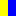

|
Full-stack application design and code example by Susan Korgen. The work is in progress. It is at the product concept, planning, and design phase. Available now:
|
All images, including those attributed to fictional characters in the project materials, are by Susan Korgen.
 is the maritime flag signal for the letter "K" (Korgen) or the message "I wish to communicate with you". Credit: Public Domain https://commons.wikimedia.org/w/index.php?curid=498590